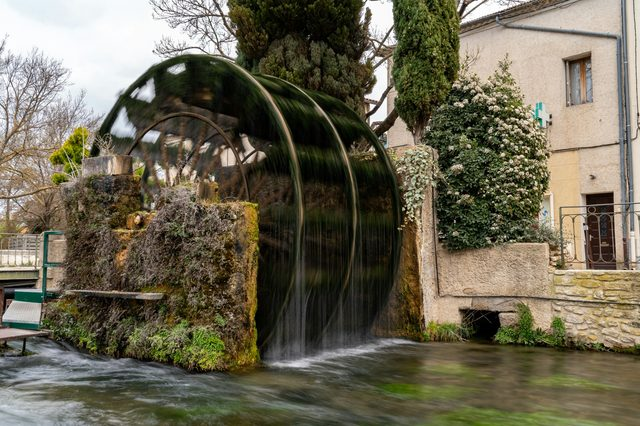

Visiting Provence
The Palais des Papes, the Bonne Mère, the calanques, the Luberon hilltop villages and the Carrières des Lumières: Provence is worth visiting all year round.
Photo: Chelsea Essig / Unsplash
Provence stretches from the ramparts of Avignon to the cliffs of the calanques. Avignon, Aix-en-Provence and Marseille are 2 h 40 to 3 h 15 from Paris by TGV, and each makes a base for the Luberon, the Alpilles or the coast.
Winter is often sunny: it is the season of Christmas markets, santon fairs and quiet hikes in the calanques. Each guide gives opening hours, 2026 prices, access and our tips.
Marseille and Aix-en-Provence


Avignon and the Luberon
-
 Avignon and the Palais des Papes
Avignon and the Palais des PapesThe Palais des Papes, the bridge from the song and an old town ringed by ramparts.
-
 Gordes and the Luberon
Gordes and the LuberonThe hilltop village of Gordes, Sénanque Abbey and the ochres of Roussillon.
-

L’Isle-sur-la-SorgueWater wheels on the Sorgue, antique dealers and the big Provençal Sunday market.